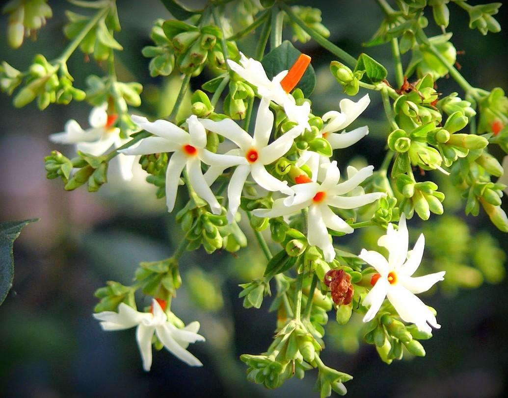
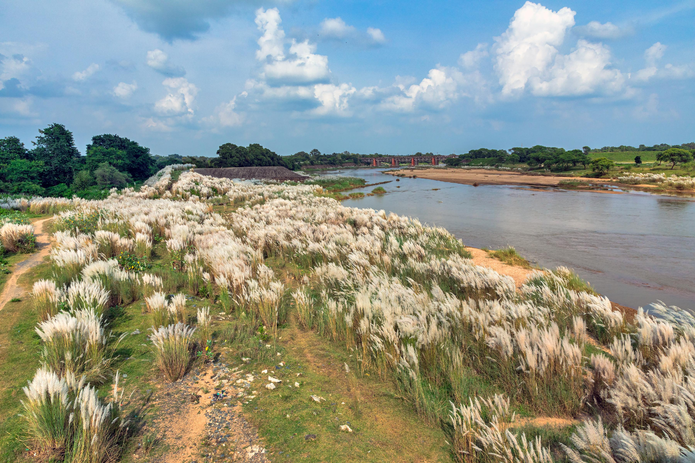
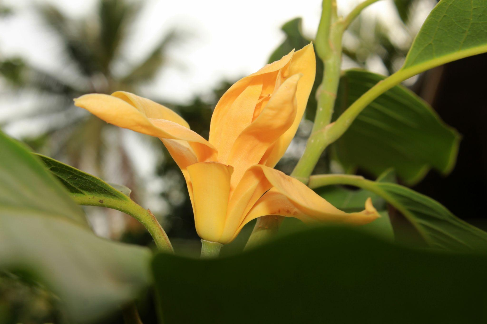
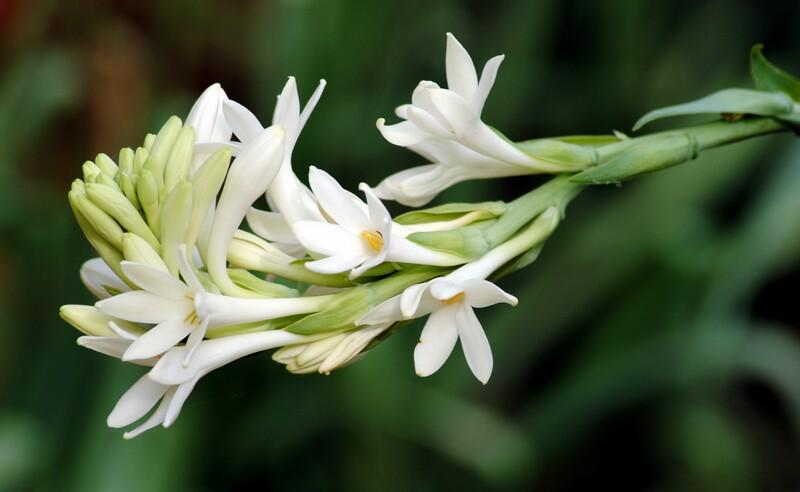

A beautiful collection of flowers blooming in the golden colors of the autumn season.
Autumn is a season of golden sunlight, cool breezes, colorful leaves,
and peaceful gardens. As the intense heat of summer slowly fades away,
nature begins to transform into beautiful shades of yellow, orange, red,
brown, and purple. Gardens become especially attractive during this
season as many colorful flowers begin to bloom and prepare the landscape
for the cooler months ahead.
Autumn gardening is a wonderful opportunity to grow healthy flowering
plants because the weather is generally more comfortable for both plants
and gardeners. Regular watering, well-drained soil, organic compost,
sunlight, and removing dry leaves help plants remain healthy. Preparing
flower beds during autumn also helps gardeners maintain a beautiful and
colorful garden throughout the changing seasons.
Flowers such as Chrysanthemums, Marigolds, Dahlias, Asters, Pansies, and
Petunias bring incredible beauty to autumn gardens. Their rich colors
attract butterflies and other pollinators while creating a warm and
peaceful environment. An autumn garden is not only a beautiful place to
enjoy nature but also a relaxing space where gardening brings joy,
creativity, and a closer connection with the changing seasons.

Shiuli is one of the most iconic flowers of autumn in Bengal.
It is known for its white petals with an orange center and its sweet
fragrance.
The flowers usually bloom at night and fall to the ground in the early
morning.
Shiuli holds a deep connection with the arrival of
Durga Puja and the festive spirit of autumn in
Bengal.
Shiuli has a soft, sweet, and pleasant fragrance that is especially
noticeable during the early morning hours. In Bengal, the flower is
strongly associated with Sharad (autumn), Mahalaya, and the arrival of
Durga Puja. The fragrance of Shiuli and the sight of its fallen
flowers often bring back memories of the festive season and childhood.

Kash Phool is one of the most beautiful and recognizable
symbols of autumn in Bengal. It has soft, white, feathery flower
plumes that gently sway in the breeze, especially along riversides,
open fields, and rural landscapes. Under the clear blue autumn sky,
large fields of Kash Phool create a peaceful and dreamy natural scene.
In Bengali culture, Kash Phool is strongly associated with the arrival
of Durga Puja. When the white Kash flowers begin to bloom, they are
often seen as a natural announcement that the festive season is
approaching. Along with the fragrance of Shiuli and the sound of
autumn mornings, Kash Phool creates the distinctive beauty and
emotional atmosphere of Sharad, making it an important part of
Bengal's autumn tradition.

Kanak Champa is a beautiful golden-yellow flower known for its
warm color and attractive appearance. Its soft yellow petals give the
flower a bright and elegant look, while its pleasant fragrance adds to
its charm. The golden shade of Kanak Champa blends beautifully with
the warm sunlight and natural colors of the autumn season.
In Bengali gardens and traditional surroundings, Kanak Champa adds a
graceful and cheerful touch to the landscape. Its golden color also
fits wonderfully with the festive atmosphere of Durga Puja,
symbolizing warmth, beauty, and celebration. Along with flowers like
Shiuli and Kash Phool, Kanak Champa can be used to represent the
colorful and peaceful beauty of Sharad in Bengal.

Rajnigandha is a beautiful and elegant flower known for its
long green stems and clusters of delicate white blossoms. The flowers
have a strong, sweet fragrance that becomes especially noticeable
during the evening and night. Its pure white color and graceful
appearance make it a popular choice for gardens, flower arrangements,
and traditional decorations.
Rajnigandha is also closely connected with puja, festivals, weddings,
and Bengali cultural celebrations. Its refreshing fragrance and white
flowers create a peaceful and devotional atmosphere, making it
especially suitable for festive occasions such as Durga Puja. Along
with Shiuli, Kash Phool, and Kanak Champa, Rajnigandha adds another
beautiful dimension to the colors and fragrance of Bengal's autumn
season.
Loosen the soil and mix organic compost before planting. Healthy soil provides essential nutrients and supports stronger roots.
Water plants according to their needs and avoid excessive watering. Well-drained soil helps prevent root problems.
Most flowering plants need several hours of sunlight every day for healthy growth and abundant blooming.
Regularly remove faded flowers and dry leaves to keep the garden clean and encourage new blooms.
Compost improves soil quality and provides natural nutrients that support healthy plant growth.
Planting colorful flowers attracts butterflies and bees, helping create a healthy and lively garden ecosystem.